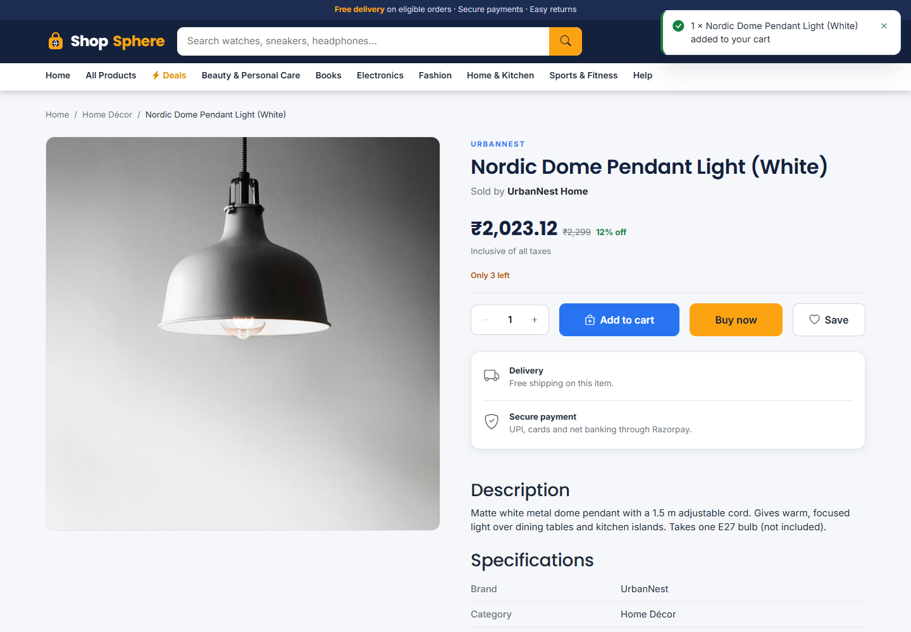
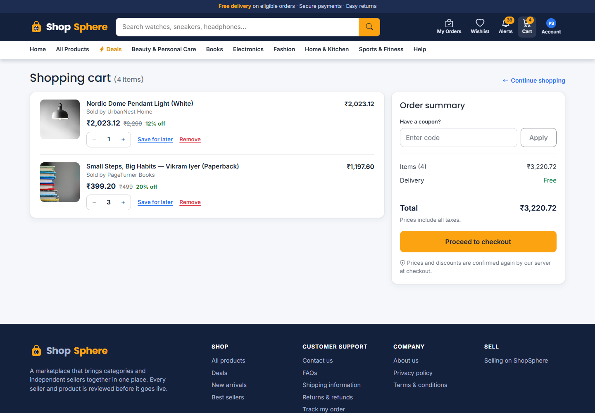
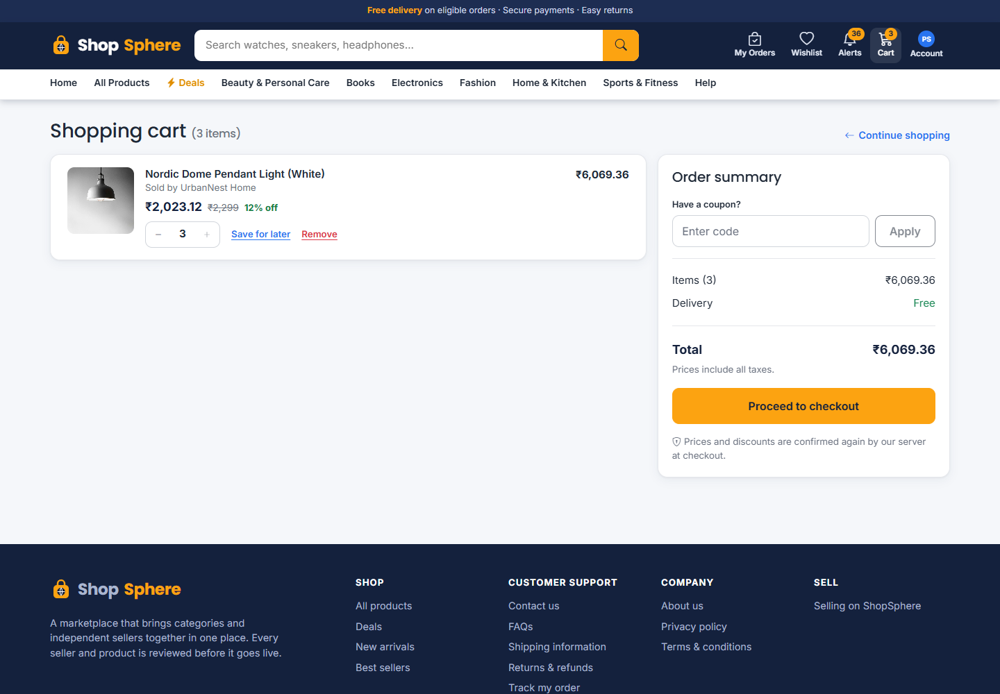
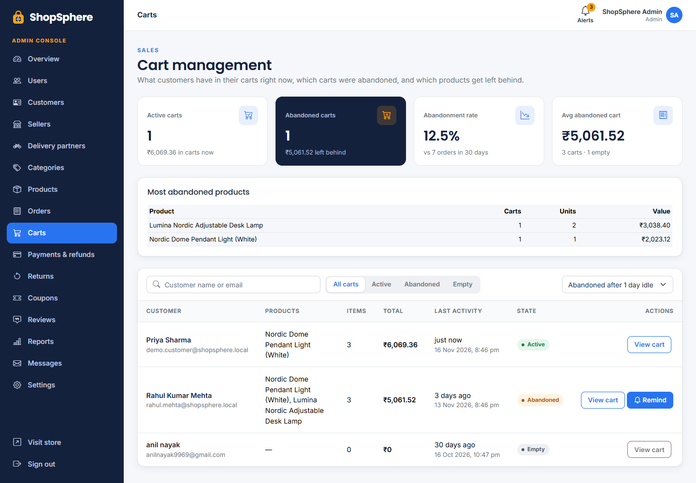
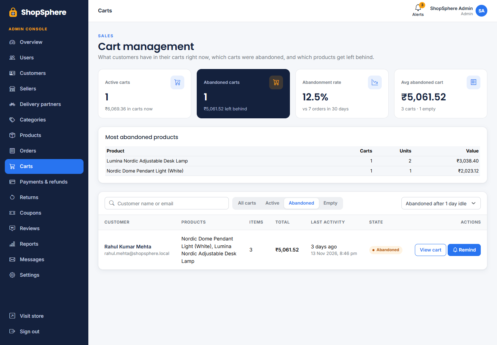
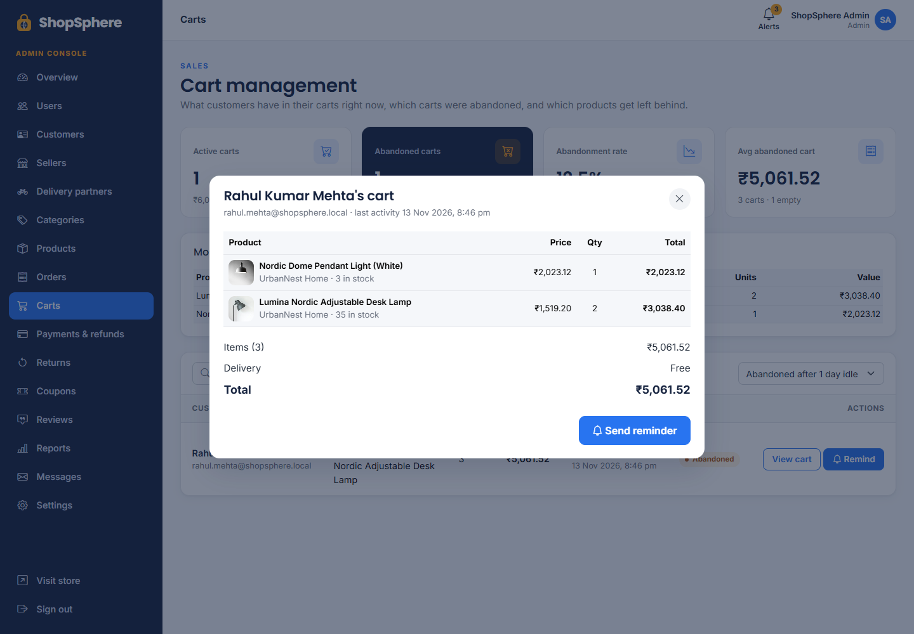
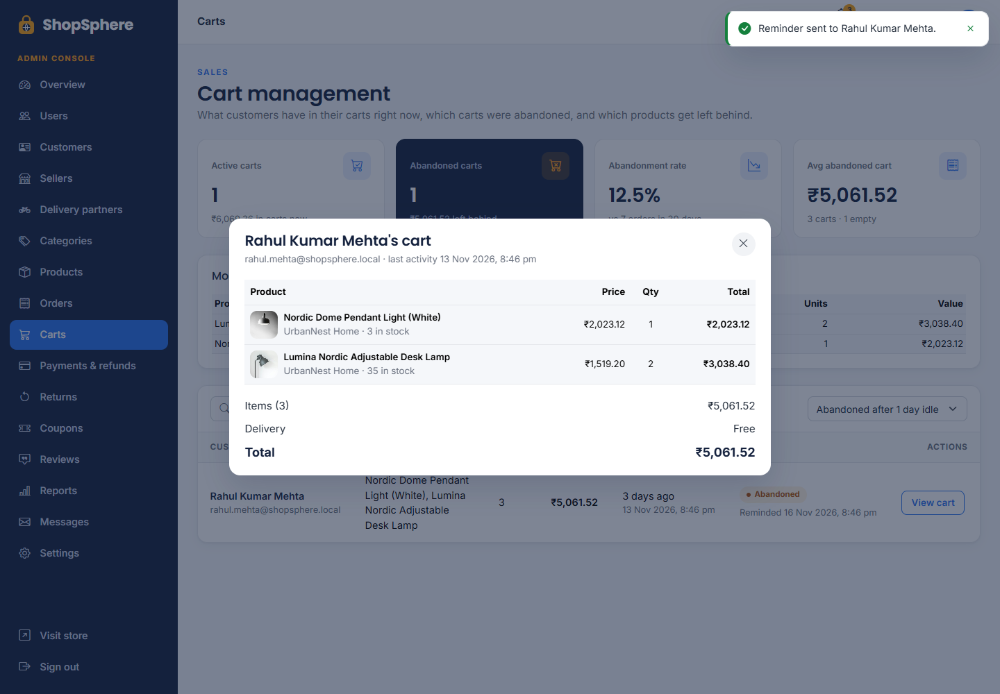

| Item | Details |
|---|---|
| Candidate | Anil Nayak |
| Internship | ITVedant / Vibgyor Advisors integrated internship |
| Project | ShopSphere — multi-vendor e-commerce platform |
| Module | Cart Management (customer cart and Admin console) |
| Frontend | React 19, Vite, React Router, Bootstrap 5 |
| Backend | Java 17, Spring Boot 4, Spring Security (JWT), Spring Data JPA |
| Database | MySQL (database ecommerce_intern, tables carts and cart_items) |
Repository: https://github.com/anilnayak9969-cmd/ShopSphere
| Folder | Contents |
|---|---|
Backend/ecommerce | Spring Boot API. The module's code is CartServiceImpl (add, update, remove, stock checks, live totals), CustomerController (cart endpoints), CartAdminServiceImpl and AdminCartController (customer carts and abandonment), the Cart and CartItem entities and CartRepository. |
Frontend/ecommerce | Customers use src/pages/ProductDetails.jsx (Add to cart), src/pages/Cart.jsx and src/context/CartContext.jsx; the admin screen is src/pages/admin/AdminCarts.jsx. |
DataBase | queries.sql (section 11: Cart Management SQL) |
Docs/CartManagement | This document, its screenshots and the module README |
Website: https://host-shop-sphere.vercel.app/ — customers use Cart; admins open Admin console → Carts (admin@shopsphere.com, password shared separately).
The customer cart already existed in ShopSphere; the items marked ADDED were built for this assignment.
| Requirement | How ShopSphere implements it | Status |
|---|---|---|
| 1. Add to cart From the product page; stock is checked | Add to cart / Buy now on the product page. The server refuses products that are not on sale, out of stock, or above the stock left ("Only 3 unit(s) … are left."), and caps a product at 10 units. Adding the same product again increases its quantity. | Implemented |
| 2. Update cart Quantity changes; total recalculated; stock checked | − / + on each cart line. Line totals, item count, delivery fee and total are recalculated by the server from current prices on every change; + stops at the stock available and the server checks again. The cart also flags price changes since the item was added. Stored totals (carts.total_price, cart_items.line_total) are now kept up to date ADDED. | Implemented |
| 3. Remove from cart Total recalculated | Remove (or Save for later, which moves it to the wishlist); the total is recalculated at once. | Implemented |
| 4. Cart dashboard Customers see name, price, quantity, total; admins view carts and analyse abandonment | Customers: the Shopping cart page (product, price, discount, quantity, line total, items total, delivery, total). Admins: new Admin → Carts page ADDED — every customer cart with products, items, total, last activity and state (Active / Abandoned / Empty), abandonment analysis (abandoned carts, value left behind, abandonment rate, average abandoned cart, most abandoned products), View cart, and a Remind button that notifies the customer. | Implemented |
| Database design Table carts | All assignment columns exist, split into carts + cart_items so one cart holds many products; total_price, total_quantity, line_total and item timestamps ADDED. See Appendix A. | Implemented |
The cart holds what a customer intends to buy until checkout. It is saved on the server, so it is still there after signing out or on another device, and every price and total is worked out again from the current product data.



| Term | Meaning |
|---|---|
| Active cart | Has items and the customer changed it within the chosen idle time |
| Abandoned cart | Has items but no activity for longer than the chosen idle time |
| Empty cart | No items (for example after checking out) |
| Abandonment rate | Abandoned carts ÷ (abandoned carts + orders placed in the last 30 days) × 100 |




| Situation | Message shown |
|---|---|
| Quantity above the stock left | Only N unit(s) of … are left. (or … is out of stock.) |
| More than 10 of one product | You can buy at most 10 units of a product per order. |
| Product no longer on sale | This product is not available.; in the cart: No longer available |
| Stock dropped after adding | Line shows Only N left — reduce the quantity; checkout is blocked until fixed |
| Price changed after adding | A notice shows the old and new price; the customer confirms before checkout |
| Reminder for a cart that is not abandoned / already reminded / inactive customer | Reminders are only for abandoned carts … / A reminder was already sent … / This customer's account is inactive. |
Figures 1–9 were taken from the application running locally (React on localhost:5173, Spring Boot on localhost:8080, MySQL ecommerce_intern). The demo customer Priya Sharma built a cart (Figures 1–5). For the abandonment figures, the demo customer Rahul Kumar Mehta added two products and his cart's last activity was set three days back in the local database to simulate a cart left behind.
The assignment describes one carts row per product. ShopSphere keeps one cart per customer (carts) and one row per product in it (cart_items), which avoids repeating the customer and totals on every row.
| Assignment column | Assignment type | ShopSphere column and type | Meaning |
|---|---|---|---|
| cart_id | int (pk, auto_increment) | carts.cart_id BIGINT, primary key | Unique identifier for each cart |
| customer_id | int (fk) | carts.user_id BIGINT, unique, FK → users (role CUSTOMER) | The customer who owns the cart |
| product_id | int (fk) | cart_items.product_id BIGINT, FK → products; unique per cart | A product in the cart |
| quantity | int | cart_items.quantity INT; carts.total_quantity INT | Units of each product; units in the cart |
| total_price | decimal(10,2) | carts.total_price DECIMAL(12,2); cart_items.line_total DECIMAL(12,2) | Total price of the items; price × quantity per product |
| created_at | datetime | carts.created_at; cart_items.added_at DATETIME(6) | When the cart / item was created |
| updated_at | datetime | carts.updated_at; cart_items.updated_at DATETIME(6) | When the cart was last changed (used for abandonment) |
Also: cart_items.price_at_add (to flag price changes) and carts.reminder_sent_at. The stored totals are a snapshot of the last change; the cart page and checkout always recalculate from current prices.
The full, tested set is in DataBase/queries.sql, section 11.
-- Add to cart only if in stock INSERT INTO cart_items (cart_id, product_id, quantity, price_at_add, line_total, added_at, updated_at) SELECT 4, product_id, 1, selling_price, selling_price, NOW(6), NOW(6) FROM products WHERE product_id = 79 AND stock_quantity >= 1 ON DUPLICATE KEY UPDATE quantity = quantity + 1; -- Update quantity (checked against stock), then recalculate the cart UPDATE cart_items ci JOIN products p ON p.product_id = ci.product_id SET ci.quantity = 3, ci.line_total = p.selling_price * 3, ci.updated_at = NOW(6) WHERE ci.cart_id = 4 AND ci.product_id = 63 AND p.stock_quantity >= 3; UPDATE carts c SET c.total_price = (SELECT COALESCE(SUM(line_total), 0) FROM cart_items WHERE cart_id = c.cart_id), c.total_quantity = (SELECT COALESCE(SUM(quantity), 0) FROM cart_items WHERE cart_id = c.cart_id), c.updated_at = NOW(6) WHERE c.cart_id = 4; -- Remove from cart (then the same recalculation) DELETE FROM cart_items WHERE cart_id = 4 AND product_id = 63; -- Admin: cart state and abandonment rate SELECT c.cart_id, u.full_name, c.total_quantity, c.total_price, c.updated_at, CASE WHEN c.total_quantity = 0 THEN 'EMPTY' WHEN c.updated_at < NOW() - INTERVAL 24 HOUR THEN 'ABANDONED' ELSE 'ACTIVE' END AS state FROM carts c JOIN users u ON u.user_id = c.user_id WHERE u.role = 'CUSTOMER';
| Method | Path | Purpose |
|---|---|---|
| GET | /customer/cart | Customer: the cart with live prices and totals |
| POST | /customer/cart/items | Add { productId, quantity } (stock checked) |
| PUT | /customer/cart/items/{id} | Update the quantity (stock checked) |
| DELETE | /customer/cart/items/{id} | Remove an item |
| POST | /customer/cart/items/{id}/save-for-later | Move to the wishlist |
| GET | /admin/carts?state=&search=&abandonedAfterHours= | Admin: customer carts |
| GET | /admin/carts/summary | Admin: active/abandoned counts and values, rate, top abandoned products |
| GET | /admin/carts/{id} | Admin: one cart in full |
| POST | /admin/carts/{id}/remind | Admin: notify the customer about an abandoned cart |
Unit tests — CartManagementTest, 12 tests, all passing: adding checks stock and stores the totals; adding above the stock or an out-of-stock product is refused; adding the same product again increases its quantity; updating recalculates the total, and updating above the stock is refused with the quantity unchanged; removing recalculates the total; another customer's cart item cannot be changed; carts are classed as Active, Abandoned or Empty; the summary works out the abandoned value, the abandonment rate (1 ÷ (1 + 7) = 12.5%) and the most abandoned products; reminders are only for abandoned carts and are sent once. The full backend suite (107 tests) passes.
End-to-end checks against the running application, 8 checks, all passing:
| Check | Result |
|---|---|
| Add above the stock | 409 — Only 3 unit(s) of Nordic Dome Pendant Light (White) are left. |
| Add to cart | 2 units added |
| Update quantity 2 → 3 | Total ₹7,521.01 → ₹7,920.21 (+₹399.20) |
| Update to 11 units | 400 — refused (10-unit limit) |
| Remove | Total recalculated |
| Admin summary / abandoned filter | 1 active, 1 abandoned, rate 12.5% |
| Customer calls the admin cart API | 403 |